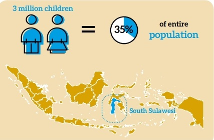
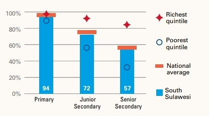
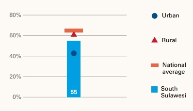

Expense Analysis
The following data will provide you a overview about the average expense related with the education and nutrition of a child. We have tried best to narrow down our research to get a perfect approximation of expense.
|
Subject |
Expense($) |
| 1 |
Education |
|
|
Primary School |
2400 |
|
Junior High School |
1000 |
|
High School |
3000 |
|
Others |
1200 |
| 2 |
Food |
|
|
Per Healthy Meal |
.50 |
|
Sum Up |
2000 |
| 3 |
Health |
|
|
Basic |
1000 |
|
Total Expense |
10600 |
South Sulawesi
Due to its low literacy rate and comparitively less established Healthcare and Food Management we decided to work on South Sulawesi


Children’s school readiness can be improved through early
childhood development programmes. The participation rate in
organised learning among 6-year-olds was 97 per cent in 2015,
though many pre-school children are already in primary school.
South Sulawesi has achieved near-universal access to primary
education. However, children from the poorest households are
much less likely to complete secondary school compared with
their more affluent peers.
Quality of education is a key concern. Only 29 per cent of
primary school children achieved the minimum national
benchmark in reading and 18 per cent in mathematics.

Nearly 355,000 children (12 per cent) were living below the
official poverty line in 2015 (Rp 8,166 per person per day). Many
more families are insecure and live on incomes that are only
marginally higher. In addition, 55 per cent of children experienced
deprivations in two or more non-income dimensions of poverty,
with persistent disparities between urban and rural areas.